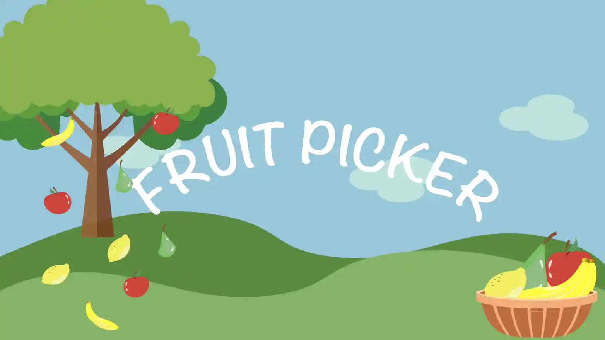
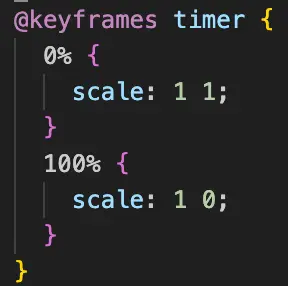
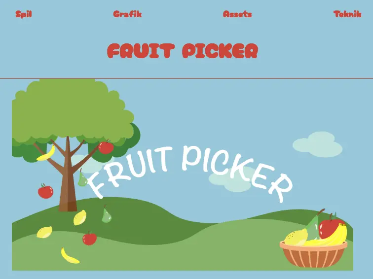

Tema 4 - Animation

Dette tema udfordrede mig virkelig. Vi skulle udvikle vores eget spil.
Som altid begyndte vi med forarbejdet, herunder idéudvikling,
prototyper og analyser. Nedenfor kan du se min papirprototype og
aktivitetsdiagram.
Vi installerede Illustrator og lærte at skabe figurer, skærme og knapper. En proces, der var både spændende og kreativ.
Kodningsdelen blev en udfordring, især med CSS-animationer,keyframesog lyde. Samtidig blev vi introduceret til JavaScript, som i starten virkede meget forvirrende for mig, muligvis fordi spiludvikling ikke fangede min interesse.
Alligevel synes jeg, at mit resultat blev godt. Jeg opdagede også, hvor alsidigt JavaScript er, og ser frem til at udforske det mere i fremtiden.
Du kan besøge mit spil, Fruit Picker, ved at klikke på billedet.